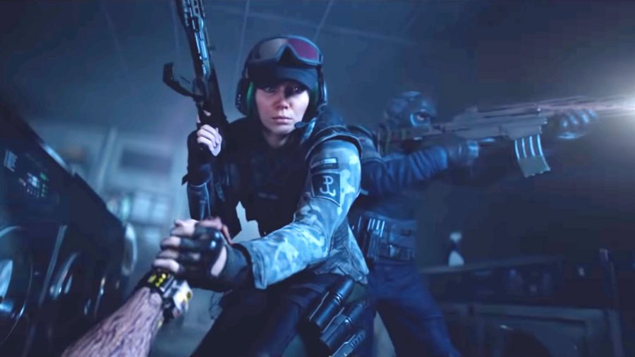
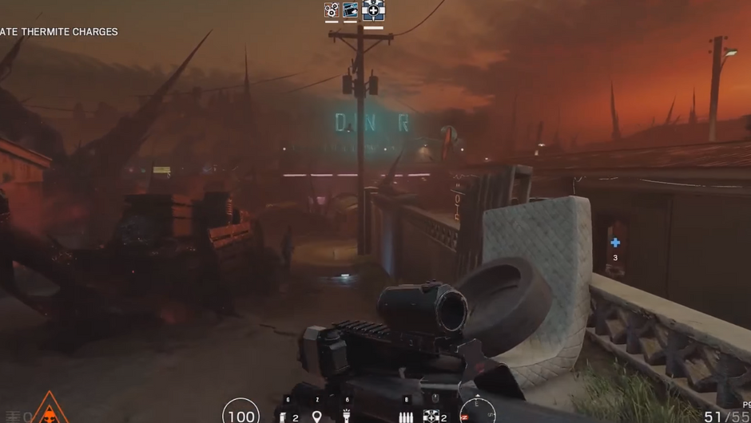

The Story
Winston City is not the same as it used to be where it was filled with laughter, people walking around, businesses everywhere and now turning into chaotic cities, suffering noises everywhere, businesses closing down, and death everywhere.
It all started when a secret organization called Raven Claw who secretly researched a virus that could turn people into living corpses accidentally leaked and then spread to all areas in the city of Winston and infected people.
Now your job as a government secret agent must carry out the mission to get the vaccine located in a laboratory in the center of the pandemic area in the city of Winston which is full of vicious undead and wants to eat you.

The Mode Description
There will be some certain difficulties which is Easy, Normal, Hard, and Expert. As the difficulty increase, the challenge will be harder too. Some of the challenge such as AI of the undead will get better, damage dealt by the undead will be increase, and also the undead's HP will be increase.
You have to teamup with 2 other players to clear the final mission which is to get the vaccine in the central pandemic area but you have to clear some missions first before you can access the final mission.
Ammo box will be available in some spots in the Winston City as you will be explore the Winston City and you can also get medkit in some random spots as medkit is a rare item. There will be defense kit you can loot in some spot such as Shield, Wires, and etc.
Not all operators you can pick in the game mode. As you get into the game, You can still use their own skill of the operator you pick. There will be 7 types of Undead which have their own skills, characteristics, and appearances.

The Map
You will play in a new map that you have never played before. You will play in the city of Winston which has become a dead city and almost 80% of the population in the city of Winston has been infected.
As if the mission is running, there will be several locations that you will go to such as gas station, office, hospital, supermarket, and others. Each location that you go to will be a different experience that you have never felt before when playing casual mode.